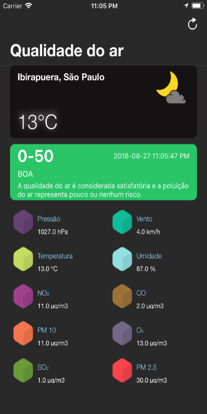
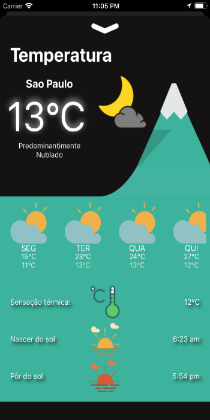
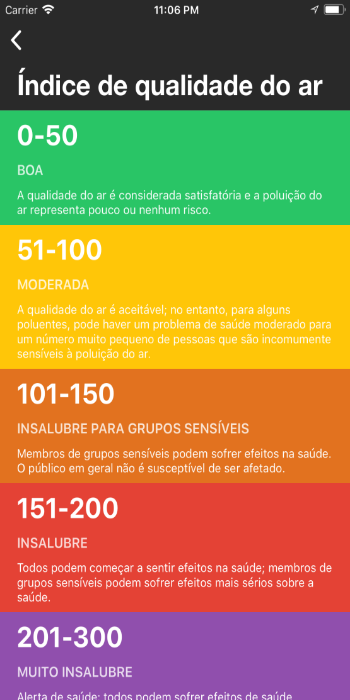

Poumon
Uma nova maneira de vivenciar a cidade
Com o Poumon você obtém informação atualizada e em tempo real das condições climáticas e de qualidade do ar.

PoumonContact Us
Com o Poumon você obtém informação atualizada e em tempo real das condições climáticas e de qualidade do ar.
PoumonContact Us